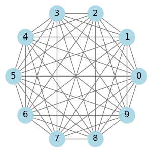

Statistical mechanics with interactions - Ising models#
Thus far, we have developed statistical mechanics as a theoretical framework and applied it to noninteracting systems (e.g. ideal gasses or the paramagnet) or small interacting systems (e.g. just a few spin degrees of freedom). We have left out interacting systems that are large. Why?
Consider a system of \(N\) Ising spins, i.e. \(N\) degrees of freedom (d.o.f.) \({\sigma_1, \sigma_2, \dots}\) where each d.o.f. has two possible states, \(\{+1,-1\}\). The partition function then involves summing over \(2^N\) microstates. With arbitrary interactions (i.e. Hamiltonians), this can be done for small \(N\), where we can simply enumerate all possible states. But to be able to compute the partition function analytically for large \(N\) requires us to somehow organize the summation in a way that makes it tractable.
To see why non-interacting systems are tractable, recall the partition function of a paramagnet (\(N\) non-interacting Ising spins in a magnetic field \(B\)),
The factorization of the partition function factorized implies an additive free energy
For non-interacting systems, we can simply “divide and conquer”: Analyze a small subsystem, in which we can enumerate all possible states, and obtain the large system as the sum of independent subsystems. (“Whole is not greater than sum of parts.”)
Also, \(F(T, B)\) is an analytic function without any cusps, kinks or singularities. Since observables are obtained from derivatives, eg. \(\left\langle\sigma_{i}\right\rangle=\frac{1}{N} \partial_B F\), everything behaves smoothly: no phase transitions.
This is true for any model with a finite number of microstates \(s=1,\dots, \Omega\): If \(H[s ; J]\) is analytic in the external force \(J\), then
is. However, with (i) interactions and (ii) thermodynamic limit, this need not be the case: the whole is greater than the sum of its parts, “more is different” (P. Anderson).
However, those intriguing, large, interacting systems generally cannot be solved exactly. We will explore approximations and numerical methods to tackle them. Nonetheless, there are certain cases that can be solved exactly, offering valuable insights. For example, the …
All-to-all Ising model#
Consider \(N\) Ising spins \(\left\{\sigma_{1}, \ldots, \sigma_{N}\right\}\), \(\sigma_{i} \in\{-1,+1\}\) with Hamiltonian
The familiar second term describes the effect of an external magnetic field \(B\). The first (non-linear) term describes ferromagnetic interactions: \(J>0\) prefers \(\uparrow \uparrow\) and \(\downarrow \downarrow\) over \(\downarrow \uparrow, \uparrow \downarrow\). The sum runs over all pairs of spins, i.e. the interactions are all-to-all,

Note that the self-interaction terms (\(i=j\)) merely contribute a constant and, therefore, have no effect on the behavior of the model. These terms could be explicitely taken out of the Hamiltonian, but we keep them for notational simplicity. Also note that we made the prefactor of the interaction term inversely proportional to \(N\) to ensure that the Hamiltonian is extensive.
Key question#
Defining \(m \equiv \frac{1}{N} \sum_{i=1}^{N} \sigma_{i}\) what is \(\langle m\rangle(\beta, J, \beta)\) as \(N \longrightarrow \infty\) ?
We will find that, in the thermodynamic limit \(N\to \infty\), the all-to-all Ising model exhibits a phase transition exhibits a phase transition at a critical temperature \(T_c\), below which the system shows spontaneous magnetization, and above which the magnetization disappears.
Note
Versatility of the Ising model All-to-all Ising models, where each spin interacts with every other spin in the system, have applications far beyond the study of magnetism. These models are used in various fields to study systems characterized by complex interactions among their components. E.g.
Neural Networks and Neuroscience: In computational neuroscience, the Ising model is used to describe the statistical properties of networks of neurons. It helps in understanding how the collective behavior of neurons can give rise to complex phenomena like memory, learning, and pattern recognition.
Optimization Problems: The Ising model has been applied to solve complex optimization problems, where the goal is to find the minimum of a function over a large space of possible solutions. This includes tasks like the traveling salesman problem, job scheduling, and portfolio optimization. Quantum annealing and classical annealing techniques often use Ising models to represent these problems.
Social Dynamics: In sociology, the Ising model is employed to study opinion dynamics within societies. It can model how individual opinions (spins) influence each other, leading to the emergence of consensus or polarization within groups.
Financial Markets: The Ising model has been used to understand the complex dynamics of financial markets, including how individual decisions can lead to collective phenomena like bubbles and crashes. It helps in studying the correlation and volatility clustering observed in market data.
Protein Folding: In biophysics, the Ising model is applied to understand protein folding, where the folding process can be thought of as spins finding their lowest energy configuration. This analogy helps in exploring the energy landscape of proteins and predicting their stable structures.
Ecological and Evolutionary Dynamics: The model is used to study species distribution and interaction in ecosystems, as well as evolutionary dynamics where species or traits compete for dominance.
Materials Science: Beyond traditional magnetism, the Ising model aids in studying the behavior of other condensed matter systems, like alloys and superconductors, where it helps in understanding phase transitions and critical phenomena.
Quantum Computing: The Ising model is central to the design of quantum algorithms and the operation of quantum computers, especially in quantum annealing and simulation of quantum systems.
Epidemiology: In modeling the spread of diseases, the Ising model can represent the state of individuals (susceptible, infected, recovered) and their interactions, helping to understand and predict outbreaks.
Analysis:#
\(\langle m\rangle \equiv \frac{1}{N} \sum\left\langle\sigma_{i}\right\rangle\) follows from the partition function \(Z=\sum_{\{\sigma\}} e^{-\beta H\{\sigma\}}=e^{-\beta F}\) via differentiation, \(\langle m\rangle=-\frac{1}{N} \partial_{B} F\).
To compute \(Z\), rewrite the Hamiltonian as
So, the energy of a microstate only depends on the magnetization \(m(\sigma)\).
We can therefore decompose
where \(\Omega(m)\) is the density of states with magnetization \(m\).
Since \(N_{+}=\frac{N+M}{2}; N_-=\frac{N-M}{2}\),
Recall from our analysis of coin flipping, that this is exactly the number of states with \(M\) more heads than tails in \(N\) trials. Employing Stirling’s formula, the entropy takes the form
which is the same expression we found for coin flipping in (1) modulo the factor of \(k_B\).
So,
where \(f(m)=e(m)-T s(m)=-\frac{J}2 m^2- B m-Ts(m)\) is the free energy density conditional on magnetization. Note that, at \(B=0\), the function \(\beta f(m)\) merely depends on the parameter \(\beta J\),
Depending on \(\beta J\), \(f(m)\) can look like a single or double well:
As \(N \rightarrow \infty\) (TDL), sum is dominated by minima \(f(m)=f(\bar{m})+\frac{1}{2} f^{\prime \prime}(m)(m-\bar{m})^{2}\)
So, problem reduces to determining minima \(f(\bar{m})\). To facilitate, assume \(m \ll 1\), where
Let’s consider case \(B=0\) :
\(\bar{m}\) depends crucially on sign of
Which minimum is attained depends on sign (B), even for infinitesimal \(B\) !
(more analysis in HW4)
Phase diagrams#